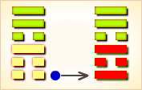
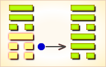
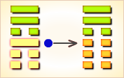
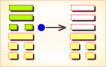
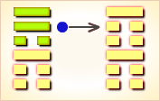
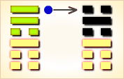

周易第53卦_渐卦(风山渐)_巽上艮下
如有疑问互相交流，微信：470283584
周易第53卦详解
渐卦原文
渐。女归吉，利贞。
象曰：山上有木，渐。君子以居贤德善俗。
白话文解释
渐卦：女大当嫁，这是好事。这是吉利的贞卜。
《象辞》说：本卦下卦为艮，艮为山；上卦为巽，巽为木，木植山上，不断生长，是渐卦的卦象。君子观此卦象，取法于山之育林，从而以贤德自居，担负起改善风俗的社会责任。
《断易天机》解
渐卦巽上艮下，为艮宫归魂卦。渐为渐进，筮遇此卦，女嫁则吉，举事有利。
北宋易学家邵雍解
循序渐进，积少成多；渐进即利，性急即败。
得此卦者，逐步开运，凡事宜循序渐进，则谋事可成，不宜急进，性急则败。
台湾国学大儒傅佩荣解
时运：时来运转，可以得意。
财运：逐渐得利，多行善事。
家宅：君子居之；贤女可妻。
身体：安居调养。
传统解卦
这个卦是异卦（下艮上巽）相叠。艮为山，巽为木。山上有木，逐渐成长，山也随着增高。这是逐渐进步的过程，所以称渐，渐即进，渐渐前进而不急速。
大象：山上种有树木，逐渐生长，比喻循序渐进。
运势：逐渐走向光明前途，凡事宜打根基，可得吉庆，但须防色情之难及文书错失。
事业：在经过一个相对静止的时期后，重新开始了事业的新阶段。这时最怕的是急躁冒进，务必循序上进，脚踏实地。同时注意品德修养，以沉着、谦逊的态度对待事业，可无往而不利。
经商：正处在稳步向前发展的阶段，要把握时机，既不可盲目乐观，也不要停步不前，而应采取逐步前进的策略，量力而行。遵守商业道德，以良好的服务，开拓市场。
求名：效法树木植根山上，逐渐生长的精神。在品德和学业两个方面，扎扎实实地提高自己。同时，肩负起改善社会风俗的责任。求名应以渐进为宜，切不可急进。
婚恋：不可操之过急。幸福、美满，夫妻白头和谐。
决策：时来运转的时刻已经到来，切莫错过良机。务必小心谨慎，渐进有益有利。以谦和的态度处世，可以得到强有力的支持，会获得重大成功。
台湾张铭仁解卦
渐：表示循序渐进，不可心急之意，主吉象。好事慢慢在进行中，一切遵循正理常规即可，事业投资均能有收益。感情婚姻，更是结果收成，欢喜结局之时。
解释：逐渐好转。
特性：感觉细腻，思想敏锐，重品味，讲情调之人，爱追求变化的事物，口才佳。反应快，为人热心，财运丰厚。
运势：逐渐顺利，光明开运之象。凡事务必掌握时机，循序渐进，可得吉庆。须防款项交易之差错及色情之灾。
家运：渐曙光明、幸福之象，诸事宜以顺乎自然为吉，反则有克也。
疾病：恶化之象，注意胃、肠、背痛等。
胎孕：无碍。
子女：儿女多坚强笃实，态度温顺，将来有成就。
周转：不成亦勿放弃，久调可成。
买卖：渐进有利，过急不利，欲速则不达。
等人：迟到。
寻人：在东南或东北二方，过些时日可寻得。
失物：多数不能寻回。
外出：准备充分，从容外出，一路平安。
考试：会取得好成绩。
诉讼：宜进不宜退，据理力争可胜。
求事：可寻得良好工作。
改行：吉利。
开业：吉利，渐有发展之象。
周易第53卦初六爻详解
初六爻辞
初六。鸿渐于干，小子厉。有言，无咎。
象曰：小子之厉，义无咎也。
白话文解释
初六：鸿雁走进了山涧。筮遇此爻，警惕小孩顽皮，遭遇危险，应该加以谴责，则没有灾难。
《象辞》说：小孩顽皮遭遇危险，因为有家长呵责制止，理应不会出事故。
北宋易学家邵雍解
凶：得此爻者，运气不佳，谋为不利。
台湾国学大儒傅佩荣解
时运：初行好运，要有耐心。
财运：有约在先，宜防小人。
家宅：尚无大碍；女长男少。
身体：大人没事，小孩就医。
初六变卦

初六爻动变得周易第37卦：风火家人。这个卦是异卦（下离上巽）相叠。离为火；巽为风。火使热气上升，成为风。一切事物皆应以内在为本，然后伸延到外。发生于内，形成于外。喻先治家而后治天下，家道正，天下安乐。
周易第53卦六二爻详解
六二爻辞
六二。鸿渐于磐，饮食衎衎，吉。
象曰：饮食衎衎，不素饱也。
白话文解释
六二：鸿雁走上水边高地，饱饮饱食，自得喜乐。筮遇此爻，吉利。
《象辞》说：饱饮饱食，自得喜乐，喻指其人，自食其力，从不白吃白喝。
北宋易学家邵雍解
吉：得此爻者，无往不利，随处皆安。
台湾国学大儒傅佩荣解
时运：嘉宾安乐，名利皆有。
财运：日益增加，稳若磐石。
家宅：和乐相处；百年偕老。
身体：饮食过度之症。
六二变卦

六二爻动变得周易第57卦：巽为风。这个卦是同卦（下巽上巽）相叠，巽为风，两风相重，长风不绝，无孔不入，巽亦为顺、谦逊的态度和行为，可无往不利。
周易第53卦九三爻详解
九三爻辞
九三。鸿渐于陆，夫征不复，妇孕不育，凶。利御寇。
象曰：夫征不复，离群丑也。妇孕不育，失其道也。利用御寇，顺相保也。
白话文解释
九三：鸿雁走到旱地上。筮遇此爻，丈夫出征可能不再回返，妇女怀孕可能流产，这是凶险之兆。但有利于抵御敌寇。
《象辞》说：丈夫出征不再回返，说明其人掉队遇险。妇女怀孕而流产，说明其人失其保胎之道。利于抵御敌寇，说明国人能够同心同德，保家卫国。
北宋易学家邵雍解
凶：得此爻者，多惊扰，人情不睦，盗贼侵害。做官的上进有阻力，有被贬之忧。
台湾国学大儒傅佩荣解
时运：运势不正，须防有祸。
财运：不易得利，防有盗贼。
家宅：不利生产，须防离散。
身体：生产时恐难两全。
九三变卦

九三爻动变得周易第20卦：风地观。这个卦是异卦（下坤上巽）相叠，风行地上，喻德教遍施。观卦与临卦互为综卦，交相使用。在上者以道义观天下；在下者以敬仰瞻上，人心顺服归从。
周易第53卦六四爻详解
六四爻辞
六四。鸿渐于木，或得其桷，无咎。
象曰：或得其桷，顺以巽也。
白话文解释
六四：鸿雁飞到树木上，有的停息在河边堆放的桷木上。筮遇此爻，没有灾难。
《象辞》说：有的鸿雁停息在河边堆放的桷木上之所以没有灾难，因为六四阴爻居于九五阳爻之下，像人有驯服而又谦逊之德。
北宋易学家邵雍解
平：得此爻者，利于修造，自给自足。做官的须随遇而安，升迁无定。
台湾国学大儒傅佩荣解
时运：随遇而安，可以免咎。
财运：利润甚微，保本即可。
家宅：可能寡居。
身体：肝火过盛。
六四变卦

六四爻动变得周易第33卦：天山遁。这个卦是异卦（下艮上乾）相叠。乾为天，艮为山。天下有山，山高天退。阴长阳消，小人得势，君子退隐，明哲保身，伺机救天下。
周易第53卦九五爻详解
九五爻辞
九五。鸿渐于陵，妇三岁不孕，终莫之胜，吉。
象曰：终莫之胜，吉，得所愿也。
白话文解释
九五：鸿雁走到山陵上。筮遇此爻，妻子多年不能怀孕，但始终不会被人取代，吉利。
《象辞》说：始终没有被人取代，吉利，妻子实现了与其丈夫和谐白头的愿望。
北宋易学家邵雍解
吉：得此爻者，先难后易，做官的多招诽谤，先暗后明。
台湾国学大儒傅佩荣解
时运：运势中正，三年必成。
财运：眼前平平，三年大发。
家宅：可以安居；得子稍迟。
身体：三年可愈。
九五变卦

九五爻动变得周易第52卦：艮为山。这个卦是同卦（下艮上艮）相叠。艮为山，二山相重，喻静止。它和震卦相反。高潮过后，必然出现低潮，进入事物的相对静止阶段。静止如山，宜止则止，宜行则行。行止即动和静，都不可失机，应恰到好处，动静得宜，适可而止。
周易第53卦上九爻详解
上九爻辞
上九。鸿渐于陆，其羽可用为仪，吉。
象曰：其羽可用为仪，吉，不可乱也。
白话文解释
上九：鸿雁走到山头上，它的羽毛可用来编织舞具。这是吉利之兆。
《象辞》说：鸿雁的羽毛可用来编织舞具，这是吉利之兆，编织舞具的羽毛应该纯而不杂，像人心志不乱。
北宋易学家邵雍解
吉：得此爻者，得人荐举，谋望有成，祸患不侵，多福多利。做官的大运来到，会得到重用。读书人会取得好成绩。
台湾国学大儒傅佩荣解
时运：大运来到，谋望有成。
财运：货美价高，自然获利。
家宅：辉煌可观；婚姻吉祥。
身体：健康活泼。
上九变卦

上九爻动变得周易第39卦：水山蹇。这个卦是异卦（下艮上坎）相叠。坎为水，艮为山。山高水深，困难重重，人生险阻，见险而止，明哲保身，可谓智慧。蹇，跋行艰难。